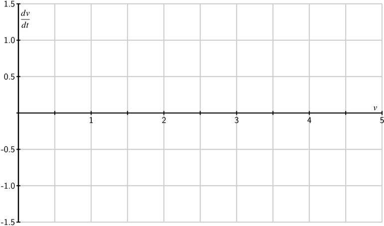
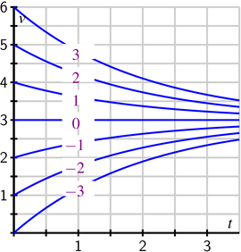
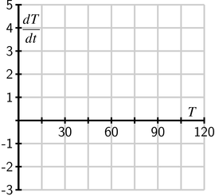

Section7.1An Introduction to Differential Equations¶ permalink
{In this section, we strive to understand the ideas generated by the following important questions:
What is a differential equation and what
kinds of information can it tell us?
How do differential equations arise in the world around us?
What do we mean by a solution to a differential equation?
}
Subsection7.1.1Introduction
In previous chapters, we have seen that a function's derivative tells
us the rate at which the function is changing. More recently,
the Fundamental Theorem of Calculus helped us to determine
the total change of a function over an interval
when we know the function's rate
of change. For instance, an object's velocity tells us the rate of
change of that object's position. By integrating the velocity over a
time interval, we may determine by how much the position changes over
that time interval. In particular, if we know where the object is at the beginning
of that interval, then we have enough information to accurately
predict where it will be at the end of the interval.
In this chapter, we will introduce the concept of differential equations and explore
this idea in more depth. Simply said, a differential equation is an equation that provides a
description of a function's derivative, which means that it tells us
the function's rate of change. Using this information, we would like
to learn as much as possible about the function itself. For instance,
we would ideally like to have an algebraic description of the
function. As we'll see, this may be too much to ask in some
situations, but we will still be able to make accurate approximations.
Preview Activity
The position of a moving object is given by the
function \(s(t)\), where \(s\) is measured in feet and \(t\) in seconds. We
determine that the velocity is \(v(t) = 4t + 1\) feet per second.
How much does the position change over the time interval
\([0,4]\)?
Does this give you enough information to determine \(s(4)\), the
position at time \(t=4\)? If so, what is \(s(4)\)? If not, what
additional information would you need to know to determine \(s(4)\)?
Suppose you are told that the object's initial position \(s(0) =
7\). Determine \(s(2)\), the object's position 2 seconds later.
If you are told instead that the object's initial position is
\(s(0) = 3\), what is \(s(2)\)?
If we only know the velocity \(v(t)=4t+1\), is it possible that the
object's position at all times is \(s(t) = 2t^2 + t - 4\)? Explain how
you know.
Are there other possibilities for \(s(t)\)? If so, what are they?
If, in addition to knowing the velocity function is \(v(t) = 4t+1\), we know the initial position \(s(0)\), how many possibilities
are there for \(s(t)\)?
A differential equation is an equation that describes the derivative,
or derivatives, of a function that is unknown to us.
For instance, the equation
\[
\frac{dy}{dx} = x\sin x
\]
is a differential equation since it describes the derivative of a
function \(y(x)\) that is unknown to us.
As many important examples of differential equations involve quantities
that change in time, the independent variable in our discussion will
frequently be time
\(t\).
For instance, in the preview activity, we considered the
differential equation
\[
\frac{ds}{dt} = 4t + 1.
\]
Knowing the velocity and the starting position of the object, we were
able to find the position at any later time.
Because differential equations describe the derivative of a function,
they give us information about how that function changes. Our goal
will be to take this information and use it to predict the value of
the function in the future; in this way, differential equations
provide us with something like a crystal ball.
Differential equations arise frequently in our every day world. For
instance, you may hear a bank advertising:
Your money will grow at a 3% annual interest rate with us.
This innocuous statement is really a differential equation. Let's
translate: \(A(t)\) will be amount of money you have in your account at
time \(t\). On one hand, the rate at which your money grows is the
derivative \(dA/dt\). On the other hand, we are told that this rate is
\(0.03 A\). This leads to the differential equation
\[
\frac{dA}{dt} = 0.03 A.
\]
This differential equation has a slightly different feel than the
previous equation \(\frac{ds}{dt} = 4t+1\). In the
earlier example, the rate of change depends only on the independent
variable \(t\), and we may find \(s(t)\) by integrating the velocity \(4t+1\).
In the banking example, however, the rate of change depends
on the dependent variable \(A\), so we'll need some new techniques in order to
find \(A(t)\).
Express the following statements as
differential equations. In each case, you will need to introduce notation
to describe the important quantities in the statement so be sure to
clearly state what your notation means.
The population of a town grows continuously at an annual rate of
1.25%.
A radioactive sample loses
5.6% of its mass every day.
You have a bank account that continuously earns 4% interest every
year. At the same time, you withdraw money continually from
the account at the rate of $1000 per year.
A cup of hot chocolate is sitting in a 70\(^\circ\) room.
The temperature of the hot chocolate cools continuously by 10% of
the difference between the hot chocolate's temperature and
the room temperature every minute.
A can of cold soda is sitting in a 70\(^\circ\) room.
The temperature of the soda warms continuously at the rate of 10% of
the difference between the soda's temperature and
the room's temperature every minute.
Subsection7.1.3Differential equations in the world around us
As we have noted, differential equations give a natural way to
describe phenomena we see in the real world. For instance, physical
principles are frequently expressed as a description of how a quantity
changes. A good example is Newton's Second Law, an important physcial
principle that says:
The product of an object's
mass and acceleration equals the force applied to it.
For instance, when gravity acts on an object near the earth's surface,
it exerts a force equal to \(mg\), the mass of the object times the
gravitational constant \(g\). We therefore have
where \(v\) is the velocity of the object, and \(g = 9.8\) meters per
second squared. Notice that this physical principle does not tell us
what the object's
velocity is, but rather how the object's velocity changes.
Shown below are two graphs depicting
the velocity of falling objects. On the left is the velocity of a
skydiver, while on the right is the velocity of a meteorite entering
the Earth's atmosphere.
Begin with the skydiver's velocity and use the given graph to measure the rate
of change \(dv/dt\) when the velocity is \(v=0.5, 1.0, 1.5,
2.0\), and \(2.5\). Plot your values on the graph below. You
will want to think carefully about this: you are plotting
the derivative \(dv/dt\) as a function of velocity.

Now do the same thing with the meteorite's velocity:
use the given graph to measure the rate of change \(dv/dt\) when the velocity is
\(v=3.5,4.0,4.5\), and \(5.0\). Plot your values on the graph
above.
You should find that all your points lie on a line.
Write the equation of this line being careful to use proper
notation for the quantities on the horizontal and vertical
axes.
The relationship you just found is a differential
equation. Write a complete sentence that explains its
meaning.
By looking at the differential equation, determine the
values of the velocity for which the velocity
increases.
By looking at the differential equation, determine the
values of the velocity for which the velocity
decreases.
By looking at the differential equation, determine the
values of the velocity for which the velocity
remains constant.
The point of this activity is to demonstrate how differential
equations model processes in the real world. In this example, two
factors are influencing the velocities: gravity and wind resistance.
The differential equation describes how these factors influence the
rate of change of the objects' velocities.
We have said that a differential equation is an equation that
describes the derivative,
or derivatives, of a function that is unknown to us. By a solution to a differential equation, we mean simply a function that
satisies this description.
For instance, the first differential equation we looked at is
\[
\frac{ds}{dt} = 4t+1,
\]
which describes an unknown function \(s(t)\). We may check that \(s(t) =
2t^2+t\) is a solution because it satisfies this description. Notice
that \(s(t) = 2t^2+t+4\) is also a solution.
If we have a candidate for a solution, it is straightforward to
check whether it is a solution or not. Before we demonstrate,
however, let's consider the same issue in a simpler context.
Suppose we are given the equation
\(2x^2 - 2x = 2x+6\) and asked whether \(x=3\) is a solution. To answer
this question, we could rewrite the variable \(x\) in the equation with
the symbol \(\Box\):
\[
2\Box^2 - 2\Box = 2\Box + 6.
\]
To determine whether \(x=3\) is a solution, we can investigate the value of each side of the equation separately when the value \(3\) is placed in \(\Box\) and see if indeed the two resulting values are equal. Doing so, we observe that
\[
2\Box^2 - 2\Box = 2\cdot3^2 - 2\cdot3 = 12,
\]
and
\[
2\Box + 6 = 2\cdot3 + 6 = 12.
\]
Therefore, \(x=3\) is indeed a solution.
We will do the same thing with differential equations. Consider
the differential equation
Let's ask whether \(v(t) = 3 - 2e^{-0.5t}\) is a solution 1 At this time,
don't worry about why we chose this function; we will learn
techniques for finding solutions to differential equations soon enough. .
Using this formula for \(v\), observe first that
Since \(\frac{dv}{dt}\) and \(1.5 - 0.5v\) agree for all values of \(t\) when \(v = 3-2e^{-0.5t}\), we have indeed
found a solution to the differential equation.
This activity shows us something interesting. Notice that the
differential equation has infinitely many solutions, which are
parametrized by the constant \(C\) in \(v(t) = 3+Ce^{-0.5t}\). In Figure 7.1.4, we see the graphs of these solutions for a few values of \(C\),
as labeled.
Figure7.1.4The family of solutions to the differential equation \(\frac{dv}{dt} = 1.5 - 0.5v\).
Notice that the value of \(C\) is connected to the initial value of the
velocity \(v(0)\), since \(v(0) = 3+C\). In other words, while the
differential equation describes how the velocity changes as a function of the velocity itself, this is not enough information to determine the velocity
uniquely: we also need to know the initial velocity. For this
reason, differential equations will typically have infinitely many
solutions, one corresponding to each initial value. We have seen this phenomenon before, such as when given the velocity of a moving object
\(v(t)\), we were not able to uniquely determine the object's position
unless we also know its initial position.
If we are given a differential equation and an initial value for the
unknown function, we say that we have an initial value problem.
For instance,
\[
\frac{dv}{dt} = 1.5-0.5v, \ v(0) = 0.5
\]
is an initial value problem. In this situation, we know the value of
\(v\) at one time and we know how \(v\) is changing. Consequently, there should
be exactly one function \(v\) that satisfies the initial value problem.
This demonstrates the following important general property of initial value problems.
{
Initial value problems that are “well behaved” have exactly one
solution, which exists in some interval around the initial point.
}
We won't worry about what “well behaved” means — it is a technical
condition that will be satisfied by all the differential equations we
consider.
To close this section, we note that differential equations may be
classified based on certain characteristics they may possess. Indeed,
you may see many different types of differential equations in a
later course in differential equations. For now, we would like to
introduce a few terms that are used to describe differential
equations.
A first-order differential equation\knownindex{\lt main>differential equation\lt /main>\lt sub>first order\lt /sub>} is one in which only the
first derivative of the function occurs. For this reason,
\[
\frac{dv}{dt} = 1.5-0.5v
\]
is a first-order equation while
\[
\frac{d^2 y}{dt^2} = -10y
\]
is a second-order equation.
A differential equation is autonomous\knownindex{\lt main>autonomous\lt /main>} \knownindex{\lt main>differential equation\lt /main>\lt sub>autonomous\lt /sub>} if the independent
variable does not appear in the description of the derivative.
For instance,
\[
\frac{dv}{dt} = 1.5-0.5v
\]
is autonomous because the description of the derivative \(dv/dt\) does
not depend on time.
The equation
\[
\frac{dy}{dt} = 1.5t - 0.5y,
\]
however, is not autonomous.
\item A differential equation is simply an equation that describes the
derivative(s) of an unknown function.
\item Physical principles, as well as some everyday situations, often
describe how a quantity changes, which
lead to differential equations.
\item A solution to a differential equation is a function whose
derivatives satisfy the equation's description. Differential
equations typically have infinitely many solutions,
parametrized by the initial values.
\hrulefill
\begin{exercises}
\item Suppose that \(T(t)\) represents the temperature of a cup of
coffee set out in a room, where \(T\) is expressed in degrees
Fahrenheit and \(t\) in minutes. A physical principle known as Newton's Law of Cooling\knownindex{\lt main>Newton's Law of Cooling\lt /main>} tells us that
\[
\frac{dT}{dt}= -\frac1{15}T+5.
\]
Supposes that \(T(0)=105\). What does the differential
equation give us for the value of \(\ds \frac{dT}{dt}\vert_{T=0}\)? Explain in a
complete sentence the meaning of these two facts.
Is \(T\) increasing or decreasing at \(t=0\)?
What is the approximate temperature at \(t=1\)?
On the graph below, make a plot of \(dT/dt\) as a function of \(T\).

For which values of \(T\) does \(T\) increase? For
which values of \(T\) does \(T\) decrease?
What do you think is the temperature of the room?
Explain your thinking.
Verify that \(T(t) = 75 + 30e^{-t/15}\) is the
solution to the differential equation with initial value \(T(0)
= 105\). What happens to this solution after a long time?
\item Suppose that the population of a particular species is
described by the function \(P(t)\), where \(P\) is expressed in
millions. Suppose further that the population's rate of change is
governed by the differential equation
\[
\frac{dP}{dt} = f(P)
\]
where \(f(P)\) is the function graphed below.
For which values of the population \(P\) does the population
increase?
For which values of the population \(P\) does the population
decrease?
If \(P(0) = 3\), how will the population change in time?
If the initial population satisfies \(0\lt P(0)\lt 1\), what will
happen to the population after a very long time?
If the initial population satisfies \(1\lt P(0)\lt 3\), what will
happen to the population after a very long time?
If the initial population satisfies \(3\lt P(0)\), what will
happen to the population after a very long time?
This model for a population's growth is sometimes called
“growth with a threshold.” Explain why this is an appropriate
name.
\item In this problem, we test further what it means for a function to be a solution to a given differential equation.
Consider the differential equation
\[
\frac{dy}{dt} = y - t.
\]
Determine whether the following functions are solutions to the given differential equation.
\(y(t) = t + 1 + 2e^t\)
\(y(t) = t + 1\)
\(y(t) = t + 2\)
When you weigh bananas in a scale at the grocery store, the
height \(h\) of the bananas is described by the differential
equation
\[
\frac{d^2h}{dt^2} = -kh
\]
where \(k\) is the spring constant, a constant that depends
on the properties of the spring in the scale. After you put the
bananas in the scale, you (cleverly) observe that the height of the bananas
is given by \(h(t) = 4\sin(3t)\). What is the value of the spring
constant?